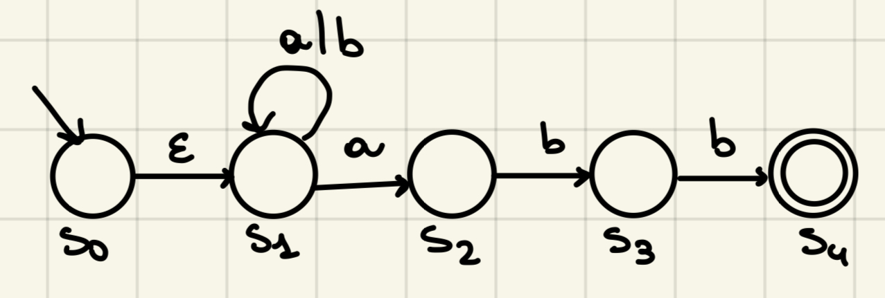
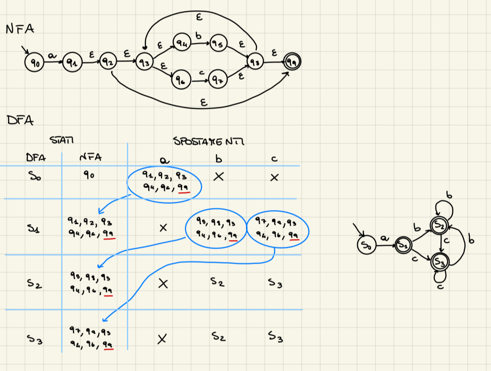
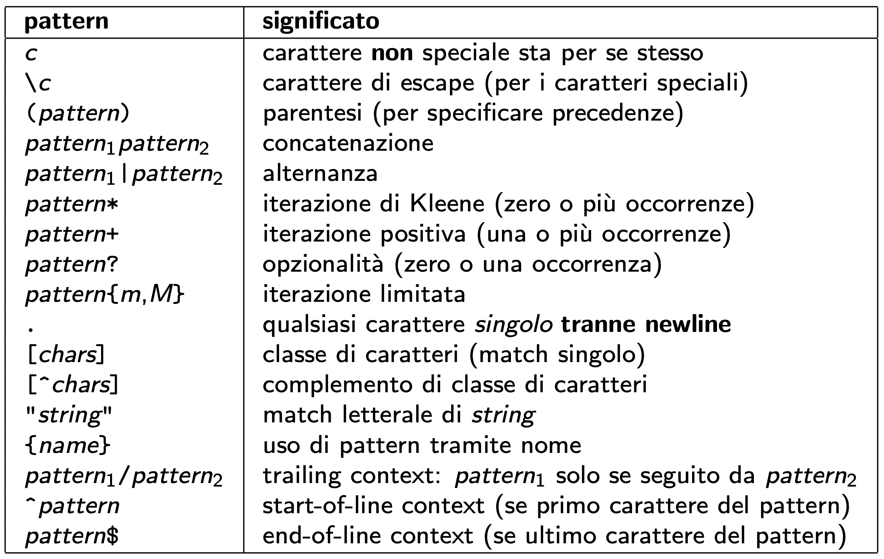

RE - NFA - DFA
Nel seguente paragrafo costruiremo un automa a stati finiti deterministico (DFA) per riconoscere un'espressione regolare (RE). Come prima cosa, partendo da un'espressione regolare, costruiremo un automa a stati finiti non deterministico (NFA). Successivamente dal NFA passeremo all'automa a stati finiti deterministico (DFA) per poi minimizzarlo (renderlo più semplice).
NFA
Costruiamo un NFA per la seguente RE: $(\text{a} | \text{b})^* \text{abb}$

Partendo dallo stato iniziale $S_0$ e seguendo le frecce possiamo ricostruire la RE precedente, che ci diceva: "possiamo avere una sequenza di zero o più (*) a o b, l'importante è che la stringa si concluda con la sequenza abb". Dunque se noi dovessimo avere una stringa del tipo "baabababb" in questo caso il nostro automa sarebbe in grado di riconoscerla e accettarla, analizziamola:
| Carattere letto | Stato corrente | Stato successivo |
|---|---|---|
leggo nulla |
$S_0$ | $S_1$ |
| b | $S_1$ | $S_1$ |
| a | $S_1$ | $S_1$ |
| a | $S_1$ | $S_1$ |
| b | $S_1$ | $S_1$ |
| a | $S_1$ | $S_1$ |
| b | $S_1$ | $S_1$ |
| a | $S_1$ | $S_2$ |
| b | $S_2$ | $S_3$ |
| b | $S_3$ | $S_4$ |
| Finiamo dunque in uno stato finale accettante $S_4$ quindi l'espressione è corretta e accettata dall'automa. |
le $\varepsilon$ transizioni permettono all'automa di passare da uno stato a un altro senza leggere alcun simbolo dell'input. In altre parole, l'automa può "saltare" da uno stato a un altro senza consumare nessun carattere della stringa in input.
Vediamo più nella teoria come si costruisce un NFA, tramite la costruzione di Thompson. Generalizziamo i casi base:

NFA vs DFA
Un automa a stati finiti deterministico è un caso speciale di automa a stati finiti non deterministico, questo perché un DFA non contiene le $\varepsilon$ transizioni, di conseguenza questo porta anche al fatto che un DFA sia deterministico e quindi significa che per ogni stato e simbolo dell'alfabeto esiste una sola transizione verso un altro stato specifico (non ci sono ulteriori opzioni), cosa che nel NFA non accade in quanto non è deterministico, quindi possiamo avere più di una transizione o anche nessuna.
Vediamo nell'esempio precedente che quando mi trovo nello stato $S_1$ e leggo il carattere a, posso avere diverse transizioni in stato differenti, infatti posso continuare a rimanere nello stato $S_1$ oppure passare allo stato $S_2$.
DFA

Vediamo come siamo passati da un NFA a un DFA:
- il nostro stato $S_0$ del DFA corrisponde allo stato $q_0$ dell'NFA, a questo punto, per ogni lettera presente nel nell'NFA guardo quali stati attraverso partendo da $q_0$ (contando anche le $\varepsilon$), nel nostro caso con la lettera a attraverso gli stati ${q_1, q_2, q_3, q_4, q_6, q_9}$, mentre per le lettere b e c non faccio spostamenti in quanto partendo da $q_0$ devo per forza avere una a per passare agli stati successivi.
- Il nuovo stato $S_1$ dunque corrisponderà all'insieme di stati trovati prima, ora da un qualsiasi stato dichiarato con la lettera a non mi sposto in un nessun nuovo stato, mentre con b posso raggiungere nuovi stati ${q_5, q_8, q_3, q_4, q_6, q_9}$, mentre con il carattere c raggiungo gli stati ${q_7, q_8, q_3, q_4, q_6, q_9}$.
- Questi stati trovati precedentemente diventano nuovi stati del DFA $S_2$ e $S_3$, a questo punto da $S_2$ con il carattere b incontro nuovamente ancora tutti gli stati di $S_2$, stessa cosa per c che incontro nuovamente tutti gli stati di $S_3$.
- Infine nello stato $S_3$, si ripete ancora la stessa cosa precedente. Da qui costruiamo il DFA.
Ora vediamo come minimizzare il DFA:

Un DFA - Automa a Stati Finiti Deterministico è una quintupla M = $\braket{\Sigma, , \text{Q}, , \delta, , q_0, , \text{F}}$, dove:
- $\Sigma$: alfabeto finito ($\Sigma$* = insieme di tutte le stringhe finite sull'alfabeto $\Sigma$)
- Q: insieme finito degli stati dell'automa
- $\delta$: $\text{Q} \times \Sigma \rightarrow \text{Q}$: funzione di transizione
- $q_0 \in \text{Q}$ lo stato iniziale
- F $\subseteq$ Q: sottoinsieme degli stati finali (accettanti) Il linguaggio riconosciuto da un DFA è l'insieme delle stringhe che sono accettate dall'automa, partendo dallo stato iniziale $q_0$, sono quelle per le quali la transizione estesa termina in una configurazione finale accettante.
Linguaggi formali:
- $\Sigma$: alfabeto finito
- $\Sigma$*: insieme di tutte le stringhe finite sull'alfabeto $\Sigma$
- $\epsilon \in \Sigma$*: indica la stringa vuota
- L $\subseteq \Sigma$*: linguaggio
- $\emptyset = {}$ è un linguaggio
- ${\epsilon}$ è un linguaggio
- $\Sigma$ è un linguaggio
- $\Sigma$* è un linguaggio
Token
Come vengono classificati i token:
- parole chiavi
- identificatori
- costanti letterali (interi, floating point, stringa, ...)
- operatori (matematici, logici, ...)
- "punteggiatura" (parentesi, virgola, punto e virgola, ...)
- commenti (singola linea, multi linea)
Esempi:
- Keyword: if, then, else, while, ... (attenzione al case sensitive).
- Identificatori:
- [a-zA-Z_][0-9a-zA-Z_]$\star$
- [a-zA-Z_]([0-9] | [a-zA-Z_])$\star$
- oppure
- DIGIT = [0-9]
- LETTER = [a-zA-Z] | [_]
- LETTER (LETTER | DIGIT)$\star$
- Costanti:
- intere: DIGIT+ (accetta 000000 non accetta -1)
- floating poit: [+-]?[0-9]+.[0-9]
- carattere: '[^']' (^' = qualsiasi carattere che non sia l'apostrofo)
- Operatori e punteggiatura, ogni lessema ha la sua categoria lessicale:

- Commenti:
- //[^\n]* \n (C++)
- --[^\n]* \n (SQL)
- commento multilinea:
- /\*([^*] | \* + [^/*])*\*+/
Flex
Lo strumento flex è un generatore di analizzatori lessicali, che è quindi un compilatore. Viene diviso in 3 sezioni generali:
1 - Sezione delle definizioni
Come prima sezione in un flexer abbiamo quella parte delle definizioni che può contenere:
- Literal Block
- Definizioni di pattern con nome
- Opzioni per flex
- Stat states
Literal block
Il literal block è un blocco di codice C racchiuso da %{ ... %} a inizio riga, questo viene copiato verbatim (letteralmente così come lo scriviamo) nella parte iniziale del sorgente generato da flex, solitamente contiene:
- definizioni di costanti per categorie lessicali
- dichiarazioni di variabili (usate nelle regole)
- dichiarazioni di funzioni (invocate nelle regole)
- definizioni di funzioni inline
enum P_LANGUAGE {
KEY_W = 1,
IDENT,
BOOL,
INTEGER,
FLOAT,
CHAR,
STRING,
COMMENT,
};
Nell'esempio soprastante ho definito delle costanti che rappresentano i tipi di di token che posso riconoscere e restituire, queste vengono utilizzate successivamente nella sezione delle regole per classificare i pattern.
Pattern con nome
Successivamente al litteral block vengono definiti i pattern con nome, cioè i pattern riutilizzabili che vengono associati a nomi specifici che verranno poi utilizzati nelle regole del lexer. la sintassi di questa sezione è del tipo: NOME_PATTERN espressione_regolare.
DIGIT [0-9]
LETTER [a-zA-Z]
IDENTIFIER {LETTER}({LETTER}|{DIGIT})*
NUMBER {DIGIT}+
WHITESPACE [ \t\n]+
Nell'esempio vediamo che il pattern DIGIT rappresenta una cifra da 0 a 9, il pattern LETTER rappresenta una lettera maiuscola o minuscola, il pattern IDENTIFIER rappresenta un identificatore, formato da una lettera iniziale seguita da lettere o cifre, il pattern NUMBER rappresenta una sequenza di una o più cifre consecutive, infine, il patter WHITESPACE rappresenta una sequenza di spazi bianchi (spazio, tabulazione, o nuova riga).
Come specifico i pattern in flex?
- Uso le virgolette per simboli non alfanumerici e le *parentesi
- ("/")([^*] | ("") +[^*/]) * (("*") + "/") questa espressione viene utilizzata per riconoscere i commenti multi-linea in C.
- Usare nomi di pattern per evitare ripetizioni:
- STARS ("*")+
nella sezione delle definizioni - ("/*<")([^*] | {STARS} +[^*/]) * ({STARS} "/")
- STARS ("*")+
Opzioni per flex
Sono due quelle da usare sempre:
%option noyywrap: evita la generazione della funzioneyywrap()e della sua chiamata fine input%option nodefault: evita la generazione della regola catch-all (. ECHO😉 che causa la stampa dei token non riconosciuti. Due sono quelle da usare quando utile:%option yylienno: definisce la variabile intera yylineno che mantiene il numero di riga della posizione corrente (la fine del lessema, usarla causa una perdita di efficienza)%option case-insensitive: rende case-insensitive i pattern, non modifica il file di input (i lessemi riconosciuti rimangono case-sensitive)
Start States
Servono a limitare l'applicabilità di alcune regole, le regole che abbiamo vediamo successivamente si applicano quando il lexer è nello stato/condition INITIAL, possiamo definire altri stati/condition nella sezione delle definizioni, con la sintassi: %x NOME_STATO.
%x indica che si tratta di uno stato esclusivo, cioè che il lexer quando entra in quello stato deve uscire dagli altri stati, %s definirebbe uno stato shared, consentendo al lexer di essere contemporaneamente in più stati (complicato).
2 - Sezione delle regole
Questa sezione inizia dopo il marker %%, serve a fornire la definizione della funzione int yylex(), questa deve leggere un lessema dall'input e restituire al chiamante il token corrispondente.
La sezione quindi contiene le regole lessicali per riconoscere i token.
Regole lessicali
Il formato di ogni regola è: pattern codice. Il pattern è un’espressione regolare che identifica una specifica sequenza di caratteri (lessema) che il lexer deve riconoscere, questo rappresenta la struttura dei caratteri che corrispondono a un token specifico. Il codice è un blocco di codice associato al pattern, che viene eseguito quando il pattern viene riconosciuto nell’input, questo specifica cosa fare quando si incontra il lessema: in genere, restituire il token corrispondente o gestire il lessema in modo particolare.
bool { return BOOL; }
if { return KEY_W; }
{NUMBER} { return INTEGER; }
{LETTER} { return IDENTIFIER; }
{WHITESPACE} { }
Nell'esempio soprastante vediamo:
- il pattern
boolche riconosce un booleano e il codice{ return BOOL; }restituisce il tokenBOOLquando viene riconosciuto il pattern (costante definita nel litteral block). - il pattern
ifche riconosce un if e il codice{ return KEY_W; }restituisce il tokenKEY_Wquando viene riconosciuto il pattern (costante definita nel litteral block). - Pattern
NUMBERriconosce un numero intero, il codice{ return INTEGER; }restituisce il tokenINTEGER. - Pattern
LETTERriconosce una stringa, il codice{ return IDENTIFIER; }restituisce il tokenIDENTIFIER. - Infine, il pattern
WHITESPACEriconosce uno o più spazi, tabulazioni o nuove righe, il codice associato{ }indica di ignorare quel tipo di lessema senza restituire alcun token.
Se volessi conoscere il lessema che è stato identificato dal lexer, esso viene contenuto nelle variabili globali yytext (puntatore al primo carattere) e la sua lunghezza tramite la variabile yyleng.
Il pattern deve essere specificato ad inizio riga, il codice deve iniziare nella stessa riga del pattern, è possibile andare a capo nel codice se lo si racchiude in un blocco: {codice}. E' possibile andare a capo con pattern disgiuntivi usando | al posto del codice, l'ordine delle regole ne stabilisce la priorità.
Come specificare i pattern in Flex: 
3- Sezione del codice utente
La sezione del codice utente inizia dopo il secondo marker %%, può contenere codice utente arbitrario, inserito verbatim dopo la definizione yylex.
Tipicamente vengono definite delle funzioni ausiliarie precedentemente dichiarate nella sezione delle definizioni e la funzione main.
int main() {
int token;
while(1) {
token = yylex();
if (token == 0)
break;
if (token == ERROR)
exit(1);
}
return 0;
}